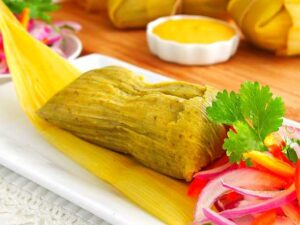
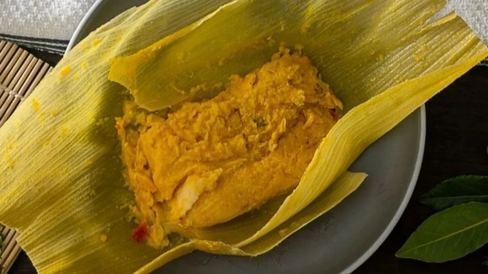

Humita

La humita es una comida basada en maíz que se consume en area andina: Argentina, Bolivia, Chile o en el sur de Colombia, Ecuador y Peru.
Este plato consiste en una pasta o masa de maíz levemente aliñada, que puede ir envuelta y finalmente cocida o tostada en las propias hojas de la mazorca del choclo.
En esta receta nos concentraremos en la Humita Chilena o como se prepara tradicionalmente en Chile.
Ingredientes:
- 1 Cebolla
- Aceite o manteca
- 1 Cucharada de paprika
- 7 a 8 choclos grandes
- Albahaca
- Sal
- Hojas de choclo
Modo de preparación:
-
En una sartén, calentar el aceite y saltear la cebolla picada en cuadritos chicos a fuego medio
durante 3 minutos y revolver de vez en cuando hasta que la cebolla se vuelva transparente.
-
Condimentar con la paprika e integrar (revolver) con la cebolla. Una vez bien revuelto retirar del fuego y dejar reposar.
-
Por otro lado, quitar las hojas de los choclos con mucho cuidado (por que las utilizaremos), reservar
las hojas mas grandes y que se encuentren en las mejores condiciones.
-
Junte de a dos hojas, colocando una encima de la otra en forma de canoa.
-
Pique los choclos y después muela los granos en molinillo, si no tiene puede usar licuadora.
-
Añada las hojas de albahaca hasta conseguir una preparación liquida con una leve textura pastosa (Es decir que esta no escurra fácilmente).
-
Juntar el choclo molido con el sofrito de cebolla y añada sal a gusto.
-
Para rellenar cada humita, simplemente distribuya la preparación anterior en las hojas
previamente unidas de a dos con forma de canoa, doble los extremos y amarrar con tiras de la misma hoja de la mazorca para dar forma a la humita.
-
Ponga las humitas en una olla grande con abundante agua caliente y cocínelas
durante 30 minutos aproximadamente, hasta que al tocarlas se sientan firmes, no blandas.
- Una vez que sientan firmes, retirarlas del agua y dejarlas escurrir para servir de inmediato. Se recomienda como
acompañamiento tomate picado con cilantro.

>>Home<<